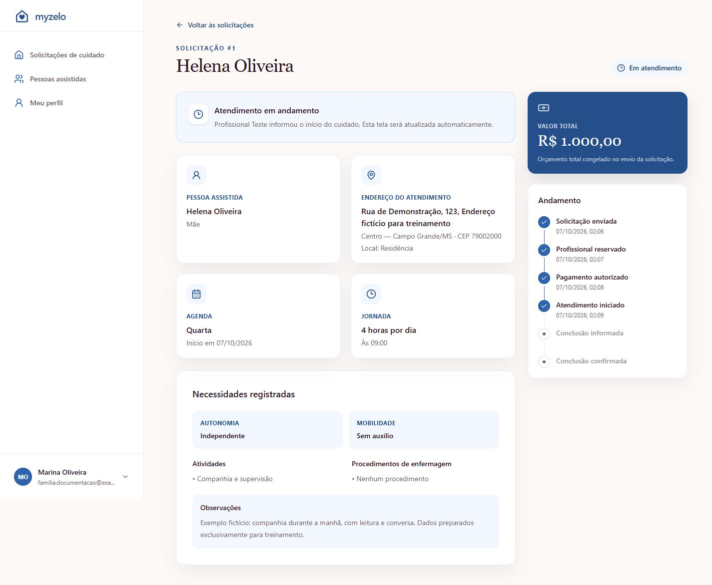
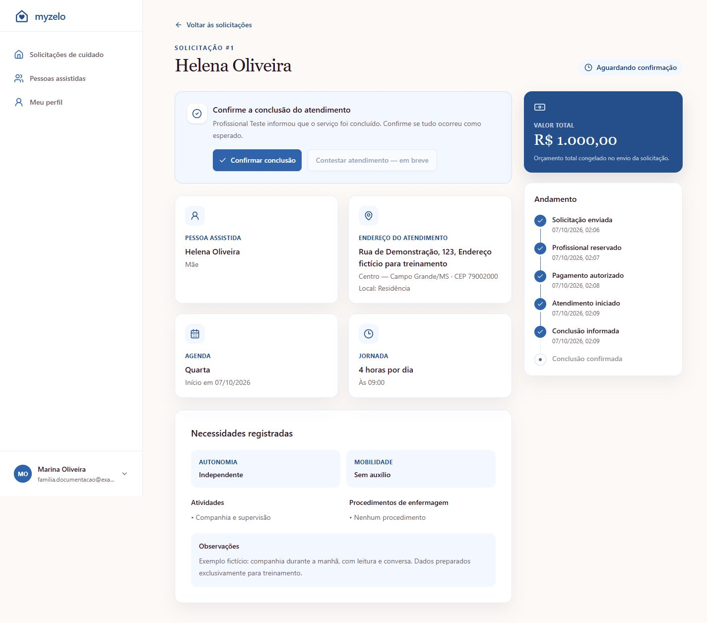
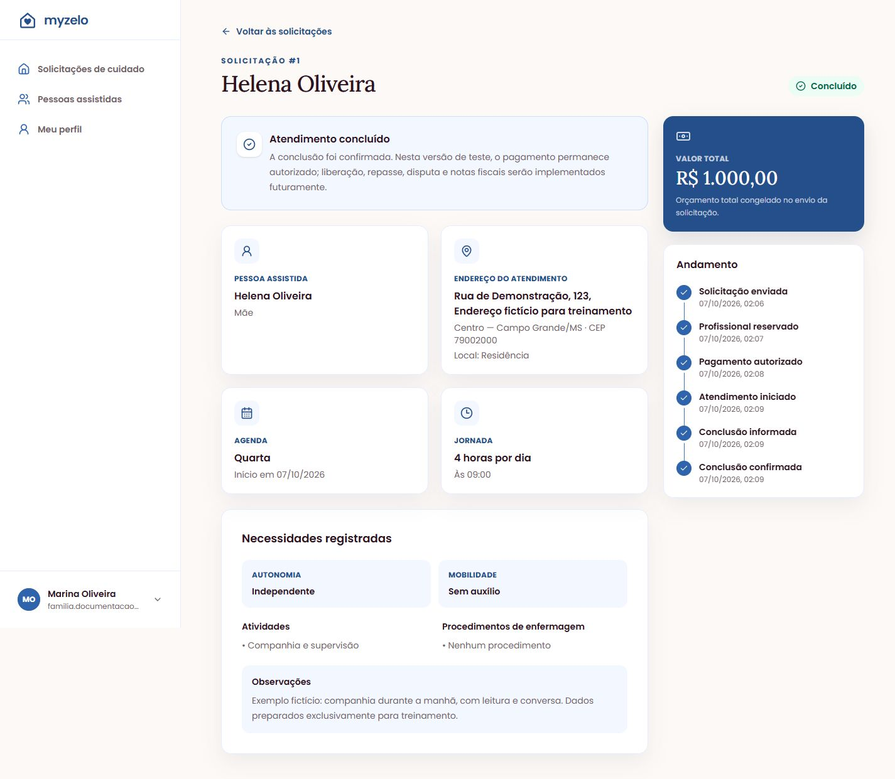

Pagamento e atendimento
Acompanhar e confirmar a conclusão
Veja o andamento do cuidado e registre a confirmação da família ao final.
Acompanhar o início
- Abra Visualizar na solicitação.
- Enquanto aparecer Atendimento autorizado, aguarde o profissional informar o início na data combinada.
- Quando o profissional iniciar, o estado muda para Em atendimento.
- Consulte a seção Andamento para acompanhar os marcos registrados.


Confirmar que o atendimento terminou
- Após o profissional informar a conclusão, abra a solicitação em Aguardando confirmação.
- Leia Confirme a conclusão do atendimento e confira se o serviço foi concluído como esperado.
- Clique em Confirmar conclusão quando estiver de acordo.
- Confira o estado Concluído e o marco Conclusão confirmada em Andamento.




Se você não concorda com a conclusão
Não confirme algo que ainda precisa ser esclarecido. A interface atual exibe Contestar atendimento — em breve, desabilitado. Não há fluxo de contestação disponível nessa tela. Esclareça a situação com a equipe responsável pelo ambiente antes de confirmar.
Resultado esperado
A solicitação aparece como Concluído e pode ser consultada no histórico.
Regras que você precisa conhecer
- A família confirma a conclusão somente depois de o profissional informá-la.
- Quem informa o início e o término do cuidado é o profissional; esses botões não pertencem à área familiar.
- A confirmação de conclusão é uma ação diferente da autorização do pagamento.